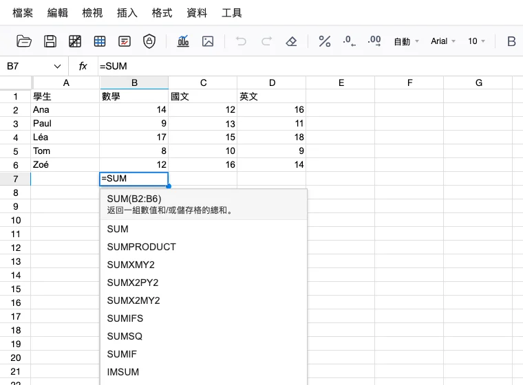
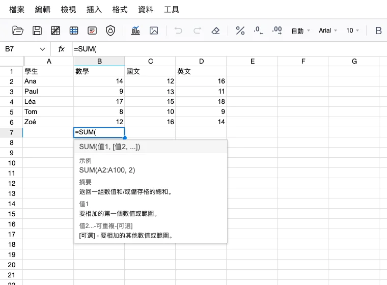
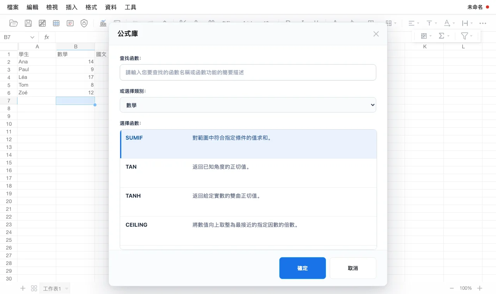

公式
書寫公式
公式以 = 開頭，包含數字、引號中的文字、儲存格參照、運算子和函數。
=B2*2
=(B2+C2+D2)/3
=AVERAGE(B2:B6)
="合計："&SUM(B2:B6)儲存格顯示結果，資料編輯列顯示公式。依賴於已更改儲存格的儲存格會立即重新計算。
小數分隔符是小數點，引數之間用逗號分隔：=ROUND(3.14159, 2)。函數名可用小寫或大寫輸入：=sum(B2:B6) 和 =SUM(B2:B6) 都可以。
用滑鼠指定儲存格
輸入公式時，按一下工作表的儲存格會插入其位址，拖曳會插入範圍。每個參照在公式和工作表中都有自己的色彩。
自動完成
輸入名稱的前幾個字母後，DocCells 會列出包含這些字母的函數：↑ ↓ 瀏覽，Enter、Tab 或按一下選擇。輸入左括號後，會顯示引數說明。


自動求和
寫入求和公式。其箭頭提供 求和、平均值、計數、最大值、最小值 和 所有公式：在公式庫中，可按名稱、說明或類別尋找函數。

運算子
| 運算子 | 作用 |
|---|---|
+ - * / | 四則運算 |
^ | 乘方：=2^10 |
% | 百分比：=20%*B2 |
& | 連接文字：=A2&" "&B2 |
= <> | 等於、不等於 |
< > <= >= | 比較 |
( ) | 優先順序 |
先乘方，再乘除，然後加減，最後比較。=-2^2 得 −4（Excel 中為 4）。
參照
| 寫法 | 含義 |
|---|---|
B2 | 儲存格；隨填滿變化 |
$B$2 | 填滿時仍是同一儲存格 |
B$2、$B2 | 固定列、固定欄 |
B2:D6 | 範圍 |
B:B、2:2 | 整欄、整列 |
工作表2!B2、'成績 2'!B2 | 另一張工作表的儲存格 |
成績 | 已命名範圍 |
向下填滿時，=B2*$B$1 變成 =B3*$B$1、=B4*$B$1…
條件
=IF(B2>=10, "及格", "不及格")
=IF(AND(B2>=10, C2>=10), "是", "否")
=SWITCH(A2, "a", 1, "b", 2, 0)
=COUNTIF(B2:B6, ">10")
=SUMIF(A2:A6, "Ana", B2:B6)
=AVERAGEIF(B2:B6, "<10")- 邏輯值寫作
TRUE()和FALSE()，帶括號。顯示為 TRUE 和 FALSE。 - 條件是文字：
">10"、"<>0"、"Ana"。不辨識萬用字元*和?。 - 空儲存格用
=B2=""判斷；它不等於 0。
在表中尋找
=VLOOKUP("Léa", A2:D6, 3, 0)
=INDEX(A2:A6, MATCH(MAX(B2:B6), B2:B6, 0))第一個公式在表的第一欄中尋找 Léa，返回第三欄；最後的引數 0 要求精確匹配。第二個公式給出成績最好的人的姓名。
日期與時間
日期是天數，時間是一天的一部分：在儲存格中可以相加減。
=A2+7
=A3-A2
=DAYS(A3, A2)
=WEEKDAY(A2, 2)由 DATE 或 TODAY 給出的日期必須經過儲存格才能相加：=TODAY()+1 得 #VALUE!，但如果 A1 中是 =TODAY()，則 =A1+1 得明天的日期。結果是數字：請設定 日期 格式。
錯誤
| 顯示 | 原因 |
|---|---|
#NAME? | 未知名稱：拼寫錯誤、不計算的函數、TRUE 缺少括號、文字缺少引號 |
#VALUE! | 類型不符：需要數字處是文字 |
DIV/0 | 除以零或空儲存格 |
#N/A | 找不到值（MATCH、VLOOKUP），或在 DocGeo 之外使用 GEO |
#REF! | 儲存格或工作表不存在 |
#NUM! | 數字超出定義域：=SQRT(-1) |
#ERROR! | 公式書寫有誤，或函數不計算 |
IFERROR 替換函數的錯誤（#N/A、#NUM!）：=IFERROR(VLOOKUP(E1, A2:D6, 2, 0), "缺席")。它不替換運算的錯誤（DIV/0、#VALUE!）：要避免除以零，請檢查除數，=IF(B2, B3/B2, "")，對零和空儲存格都適用。